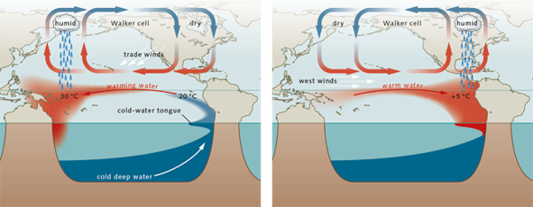
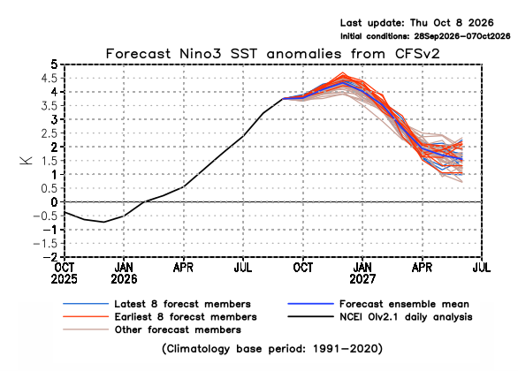

2026 Super El Niño: What to expect in the UK this Winter.
Published 14 October 2026 | 11538036, The University of Manchester

Figure 1: An example of storms more likely to occur during an El Niño event.
A Super El Niño is set to bring heavy rain and storms to the UK this December, with the potential to continue into late winter.
What actually is an “El Nino”?
El Niño is the warm phase of a naturally occurring climate cycle known as the El Niño-Southern Oscillation (ENSO). Caused by ongoing oceanic and atmospheric processes, the cycle usually lasts between three to seven years, involving three stages: El Niño, La Niña and ENSO-neutral.
Different regions across the globe respond uniquely to each stage. Generally, a northern European El Niño winter brings mild, wet and stormy conditions during the early winter (November-December), before shifting to colder, more settled weather later in the season. However, the very strongest El Niño events have been known to avoid this intraseasonal shift by triggering different atmospheric wave patterns, maintaining stormy weather and preventing the usual late-winter Arctic freeze in the UK.
Why does El Niño happen, and what makes this one “super”?
The ENSO cycle depends on wind patterns and sea surface temperatures across the tropical Pacific Ocean. Under normal conditions, trade winds blow from east to west, pushing warm surface water towards Australia and Indonesia. During an El Niño event, atmospheric pressure shifts cause these winds to reverse direction and blow from the west, allowing warm water to build up along the coast of South America instead. This change ocean surface heat alters atmospheric convection, leading to changes in global weather patterns, as shown in Figure 1 (How El Niño forms, 2017).

To monitor the ENSO cycle, scientists measure sea surface temperatures across a region of the Pacific known as Niño3, shown in Figure 2. Temperature differences compared to long-term averages are called “anomalies”. The size of this anomaly indicates how severe global weather disruptions are likely to be, summarised in Table 1.
| Intensity | Niño3 SST anomaly (°C) |
|---|---|
| Weak | < 0.83 |
| Moderate | 0.83 < Niño3 < 1.5 |
| Strong | > 1.5 |
*Anomaly threshold for the other stages of the ENSO cycle can be found at PASTE_LINK_TEXT_HERE.

As of October 2026, the Niño3 region recorded a monthly average anomaly of +3.25°C, making it the highest recorded warming value for any El Niño season. NOAA forecasts this ocean warming to peak in December, as shown in Figure 3, suggesting the most active UK storm period will occur during early winter.
